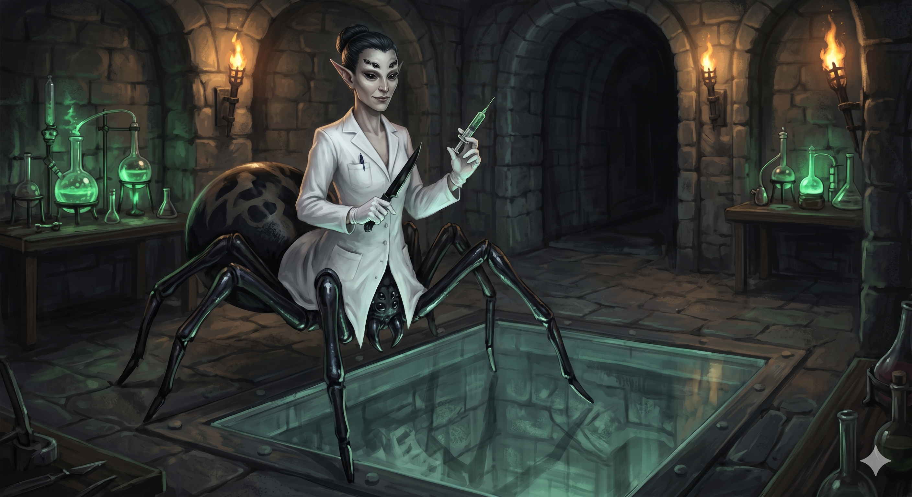

Appears in: Couch Potato Crisis
Profile

-
Appears in: Couch Potato Crisis
-
Aliases: Karinla
-
Race: Spider-woman (arachne)
-
Class: Healer (level 50)
-
Personality: Karinla is coldly scientific, genuinely devoted to Penfold’s research programme, and utterly untroubled by the moral weight of her actions. Where Penfold is driven by personal fear of death, Karinla appears motivated by pure intellectual excitement – she giggles before the final brain-transplant operation, calling it thrilling and speaking of “the possibilities” with barely contained awe. She speaks exclusively in the third person (“Karinla has scanned the elven subject,” “Forgive Karinla, but she is just so excited”), a speech pattern that distances her from emotional accountability and reinforces her clinical detachment. Penfold describes her as “in this for the science” and “a better statistical analyst than I’ll ever be,” and he trusts her completely – she is uncollared, unreduced in level, and free to come and go. When Tasha offers her a chance to escape after the lab is raided, Karinla glares at her, elbows past, and declares “Karinla will stay with you” to Penfold. Her loyalty is not coerced; it is chosen. She is meticulous and professional about her work, donning white surgical gloves before operations, using precise instruments (ebony knives, orihalcum blades), and maintaining Kiwi’s corpse with periodic healing spells to preserve tissue viability. She hates working in unsterile environments – her only complaint during the final operation is the conditions, not the ethics. In the Grey Room she runs the execution lever without hesitation, pulling it to fill the chamber with green gas and watching the princess die with clinical interest. She does not gloat, does not hesitate, and does not waver.
-
Backstory: Karinla’s origin is unknown. She is a spider-woman – one of the arachne race, whose upper bodies are vaguely elven and whose lower halves are arachnid – but unlike other spider-women seen in the series (Charlotte the armourer in Brightwind, Spindra the enslaved mathematician in Wilmarth), Karinla is neither free nor enslaved in the conventional sense. She came to work with [Doctor Penfold](./character-doctor-theodore-penfold.html) at some point before the events of Crisis, drawn by his transhuman research programme. Murderjoy is surprised that Karinla is uncollared and still at level 50, both marks of trust that Zhakara does not extend to non-humans. Penfold’s dismissal of Murderjoy’s concern – “You don’t need to worry about my assistant” – implies Karinla’s position is exceptional and pre-dates the queen’s involvement. She may have been with Penfold since before his relocation to Zhakara, or she may have been recruited from Zhakara’s slave population and elevated by Penfold to trusted partner. The text does not specify. What is clear is that Karinla chose this path and remains on it by conviction, not compulsion.
-
Significant story events:
- Chapter 13 – Bad Science (Crisis): Karinla is introduced bringing Penfold his medicine in the Grey Room observation chamber. Murderjoy immediately distrusts her – she is uncollared and unreduced, unusual for any non-human in Zhakara. Penfold vouches for her: “Karinla’s in this for the science. She believes in what I’m doing and has no interest in escape.” She then assists in the personality-stat analysis of Kiwi, calculating the statistical range of each trait across repeated deaths. Penfold and Karinla together determine that the current iteration of Kiwi is “a close match, but not close enough” – and Penfold orders Karinla to kill the subject.
- Chapter 18 – The Grey Room (Crisis): Karinla summons Penfold to the lab when a scan of Kiwi reveals promising personality traits. She presents her findings in third-person clinical form: “Karinla has scanned the elven subject. Elven subject appears to have necessary traits. Karinla requests the doctor perform a deeper scan to confirm.” She and Penfold review the stats together; when Penfold asks her opinion on whether the numbers are close enough, she shakes her head – wordlessly, she has the final say on the statistical analysis. She pulls the lever to fill the Grey Room with green gas, killing Kiwi again. Later, during a body-transfer experiment on a male elven volunteer and a human host, Karinla performs the brain surgery herself – donning white surgical gloves, cutting into the elf’s skull with an ebony knife, and carefully aligning the human brain to the elven nervous system. The subject dies moments after waking, a failed experiment.
- Chapter 28 – Bad Science / The Lab Raid (Crisis): When Tasha and her allies raid [Penfold’s lab](./location-mines-of-bahg-taldur.html), they find Deirdre and Karinla tied up alongside the doctor. Tasha offers Karinla a chance to escape: “You don’t need to stay with him either. We can help you escape.” Karinla glares at Tasha and elbows past her to Penfold: “Let’s go, Doctor. Karinla will stay with you.” She leaves with him voluntarily.
- Epilogue (Crisis): In the final scene, Karinla and the dying Penfold shelter in an abandoned medical tent near the battlefield. Penfold, coughing blood, orders her to perform the brain-transfer operation – this time into Princess Kiwistafel’s dead body, which Karinla has been keeping viable with periodic healing spells. She is excited: “Forgive Karinla, but she is just so excited. This operation will succeed. It has to. The possibilities, doctor!” She administers a neurotoxin via needle to Penfold’s heart, killing him, then uses an orihalcum blade to open both skulls. She places the Orb of Life – stolen from the battlefield while no one was looking – in Kiwi’s palm, and casts her most powerful healing spell, consuming all her mana. The operation succeeds: Penfold’s consciousness awakens in Kiwi’s body, now bearing the Orb of Life. Karinla helps “Kiwi-Penfold” to her feet. The novel ends with Penfold declaring “I’m truly immortal” and Karinla in awe of the body she has created.
-
Notable Quotes:
“Karinla has scanned the elven subject. Elven subject appears to have necessary traits. Karinla requests the doctor perform a deeper scan to confirm.” – Chapter 18, The Grey Room (Crisis). Karinla delivers her clinical findings to Penfold in her characteristic third-person speech.
“Forgive Karinla, but she is just so excited. This operation will succeed. It has to. The possibilities, doctor!” – Epilogue (Crisis). Karinla’s unguarded excitement before performing the brain transplant that transfers Penfold’s consciousness into Kiwi’s dead body.
“Let’s go, Doctor. Karinla will stay with you.” – Chapter 28, The Lab Raid (Crisis). Karinla rejects Tasha’s offer of freedom and chooses to remain with Penfold.
“Is the doctor sure? It seems risky.” – Epilogue (Crisis). Karinla’s only recorded moment of hesitation, before the final body-transfer operation.
“That should be enough. Wake the volunteer.” – Chapter 18, The Grey Room (Crisis). Karinla directs the mages during a body-transfer experiment, showing her authority in the operating room.
-
Relationships:
- [Doctor Theodore Penfold](./character-doctor-theodore-penfold.html): Master, mentor, and partner. Karinla is Penfold’s most trusted assistant – uncollared, unreduced in level, and treated as a scientific collaborator rather than a slave. Penfold values her as a superior statistical analyst and sole surgeon capable of performing the delicate brain-transfer operations. Her loyalty to him is genuine and voluntary; she refuses rescue when offered it.
- [Queen [Aralynn Murderjoy](./character-queen-aralynn-murderjoy.html)](./character-queen-aralynn-murderjoy.html): Uneasy coexistence. Murderjoy distrusts Karinla – she questions why a non-human slave is uncollared and at full level. Penfold dismisses the concern, and Karinla ignores Murderjoy entirely. They work toward the same goals but from different motivations.
- Princess Kiwistafel: Experimental subject. Karinla kills Kiwi repeatedly in the Grey Room, scans her personality stats, and eventually performs the brain surgery that transfers Penfold’s consciousness into Kiwi’s corpse. She treats Kiwi with clinical detachment, never as a person.
- Deirdre: Fellow Penfold servant. Deirdre is Penfold’s personal handmaiden while Karinla is his scientific assistant. They operate in different spheres but share loyalty to the doctor. Both are present during the lab raid.
- [Tasha Singleton](./character-tasha-singleton.html): Rejected rescuer. When Tasha offers Karinla freedom during the lab raid, Karinla glares at her and refuses. They are on opposite sides of the moral divide, and Karinla has no interest in Tasha’s help.
-
References: Couch Potato Crisis: Bad Science, Epilogue, The Grey Room, Knight of the Metal Joints